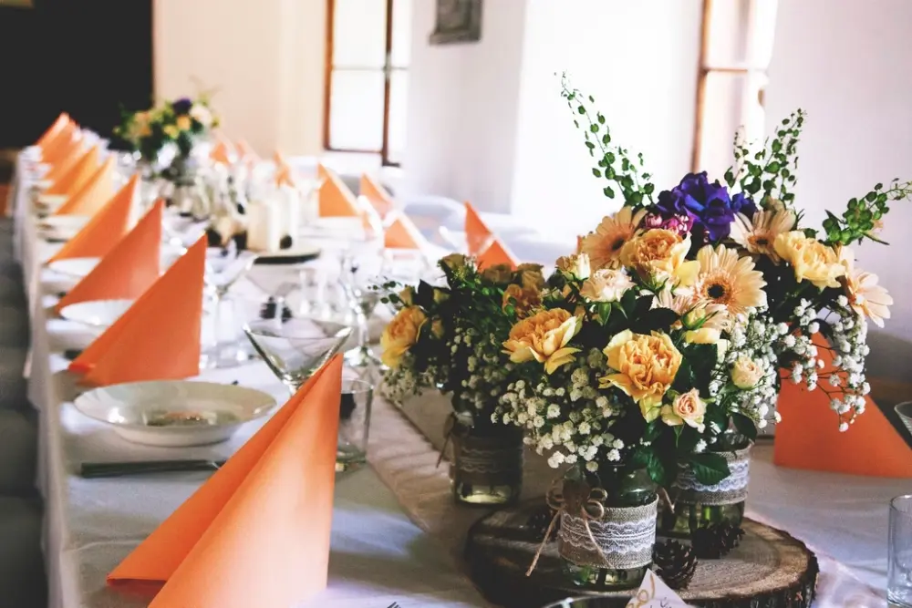

How it works拿起話筒就好
01拿起話筒
聽到新人預錄的開場問候。
02聽到嗶聲
提示音後開始錄音，不用按任何按鈕。
03說一段祝福
想說多久都可以，旁邊有提示卡幫忙開口。
04掛上電話
錄音自動儲存，下一位賓客接著來。
Features電話留影機包含什麼
01復古電話
轉盤式外型、真實話筒手感，長輩不用教也會用，也是現場的拍照焦點。
02新人開場錄音
由新人預錄一段問候，賓客拿起話筒先聽到你們的聲音。
03祝福提示卡
「第一次見到新人是什麼時候？」害羞的賓客也知道要說什麼。
04精華合輯
挑選精華剪成一支祝福合輯，配上音樂，可在回門宴播放。
05原檔全數交付
每一段祝福都保留原始檔，活動後 14 天內交付。
06海外祝福
可加開語音信箱，讓無法到場的親友提前留言，一起放進合輯。
Why voice
照片記得表情，
聲音記得語氣。
阿嬤的口頭禪、大學室友笑到說不下去的那幾秒、爸爸清了三次喉嚨才開口。這些是照片拍不到的。電話留影機讓賓客在一個安靜的角落，對你們說真心話。
- 可單獨租借，也可與拍貼機組成「雙機」方案
- 適合婚禮、收涎、長輩壽宴、退休歡送

Specs場地需求
佔地約 1.5 × 1.5 公尺（小桌一張）
電源110V 插座一組
進場架設活動開始前 60 分鐘
交付內容每段原始音檔＋精華合輯 1 支
交付時間活動後 14 天內
Works用過電話留影機的活動
全部作品 →


FAQ常見問題
每段可以錄多久？
預設單段最長 3 分鐘，可依需求調整。大多數賓客會說 30 秒到 1 分鐘。
現場很吵會錄不清楚嗎？
話筒收音只收近距離聲音，宴會廳音樂聲不太會干擾。我們也會把電話放在相對安靜的位置。
可以只租電話留影機嗎？
可以，也可與拍貼機搭配成雙機方案，價格更划算。
精華合輯可以指定音樂嗎？
可以，提供歌單參考，或由你們指定一首歌。